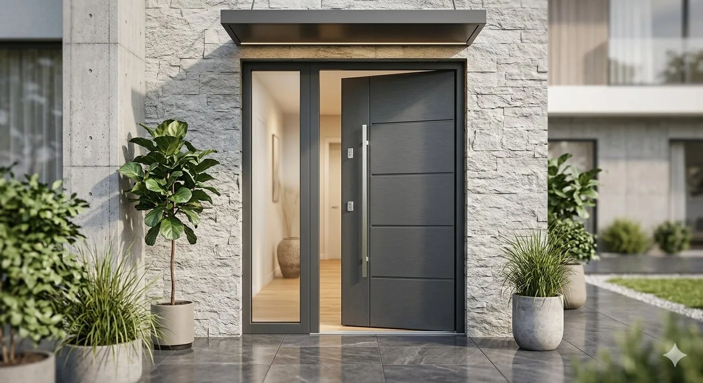
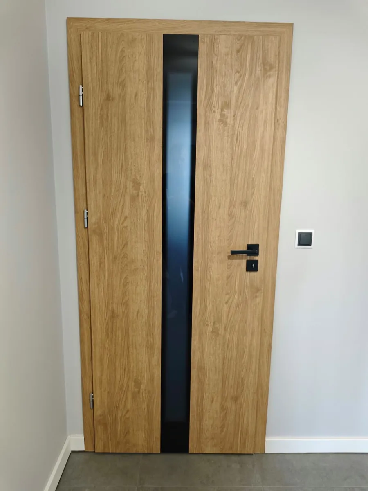
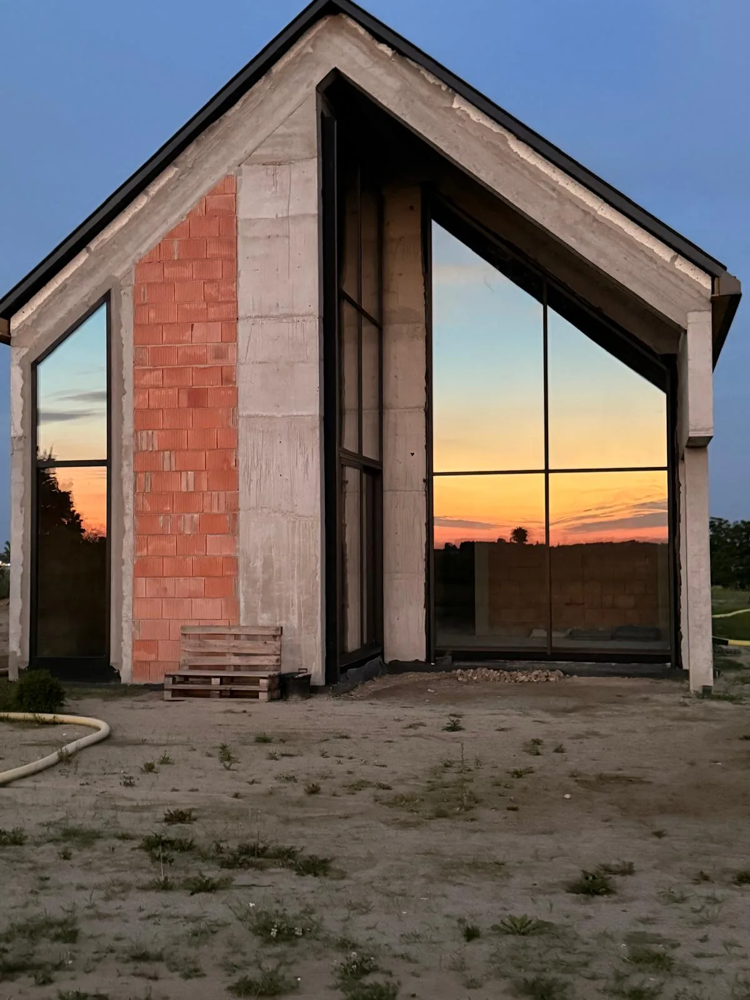
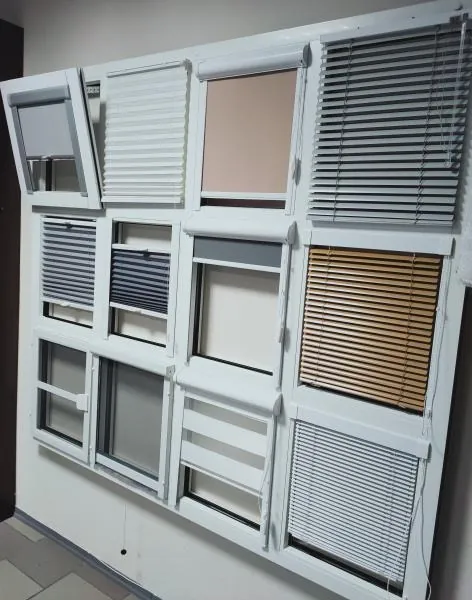
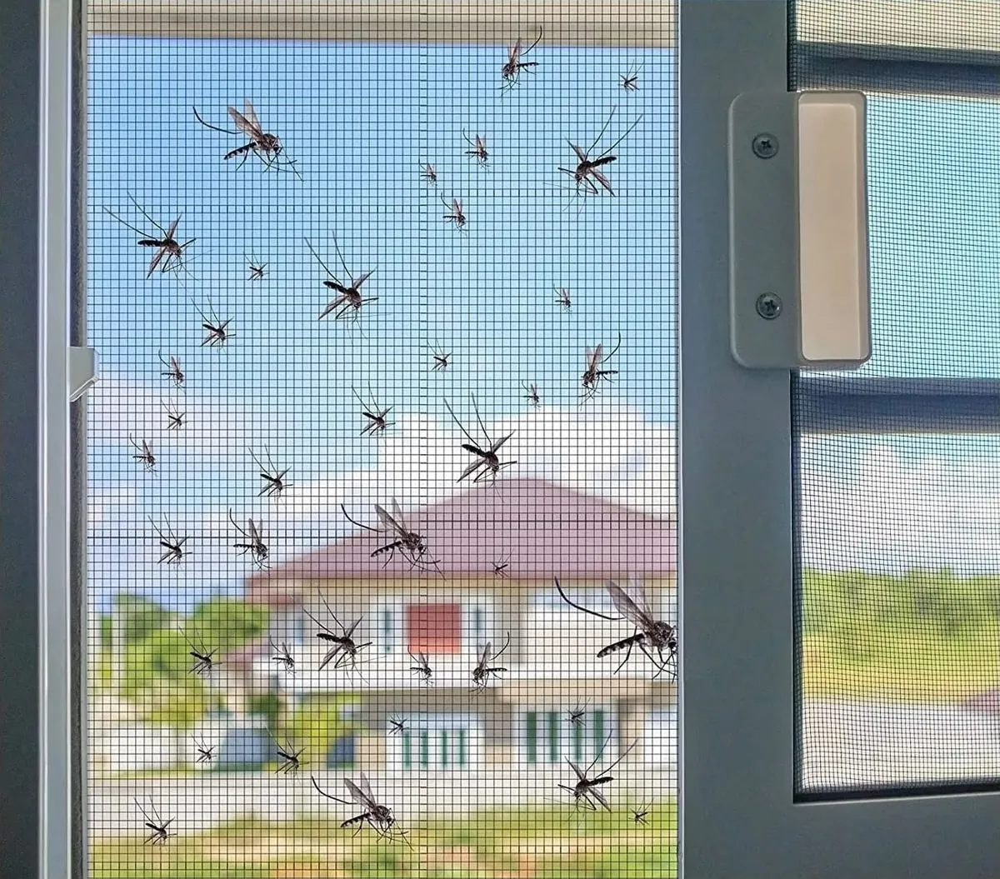

Oferta produktów
Kompleksowa stolarka otworowa dla domu i inwestycji: okna, drzwi, bramy, rolety i parapety od sprawdzonych producentów.

Okna PCV
Zobacz ofertę ↗

Drzwi wejściowe
Zobacz ofertę ↗

Drzwi wewnętrzne
Zobacz ofertę ↗

Bramy garażowe
Zobacz ofertę ↗

Stolarka aluminiowa
Zobacz ofertę ↗

Osłony okienne
Zobacz ofertę ↗

Parapety i blaty
Zobacz ofertę ↗

Moskitiery
Zobacz ofertę ↗